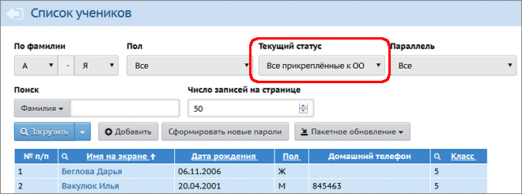
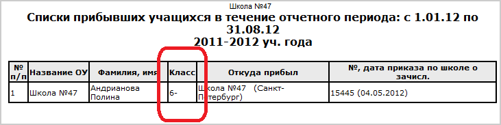

Категория учащихся "Прикреплённые к ОО" используется для учёта следующих детей:
В общеобразовательной организации:
| Дети на семейном (домашнем) обучении, которые обучаются вне школы. Как правило, такие дети зачисляются в конкретный класс только для прохождения промежуточной или итоговой аттестации, а затем опять переводятся в категорию "Прикреплённые к ОО".
|
| В личной карточке такого ученика в поле Форма обучения нужно выбрать одно из значений: "Семейное образование" или "Самообразование".
|
|
|
| Дети, которые проживают на территории микрорайона ДОО, но не посещают данную ДОО (т.н. "неорганизованные" дети).
|
Движение "прикреплённых" учащихся
| · | В течение учебного года: можно в любой момент перевести ученика из «прикреплённых» в конкретный класс. Это позволяет, например, выставить ученику на домашнем обучении итоговые отметки в конце учебного года.
|
| · | При переводе на следующий учебный год: «прикреплённых» учащихся можно перевести на следующий учебный год, оставив в этой же категории «прикреплённые» либо зачислив в класс.
|
Внимание! «Прикреплённые» ученики не видны в списках классов, а также не учитываются в отчётах по успеваемости и посещаемости!
«Прикреплённые» учитываются только в следующих административных отчётах:
| · | Титульный лист комплектования
|
| · | Список выбывших учащихся
|
| · | Список прибывших учащихся
|
| · | Информация по движению учащихся (Форма №3)
|
| · | Информация о численности детей
|
Если в отчёте присутствует графа "Класс", то для "прикреплённых" учащихся в этой графе выводится параллель прикрепления с дефисом, например:
 |